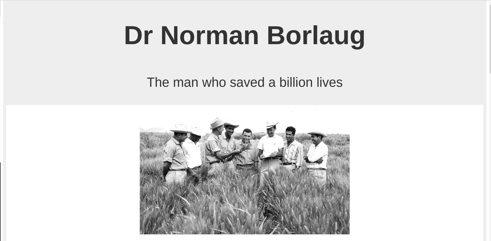
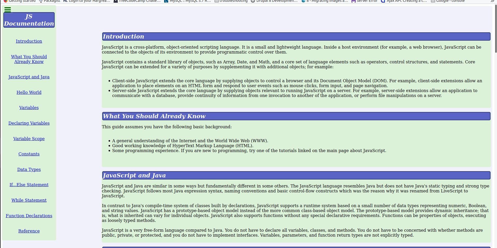
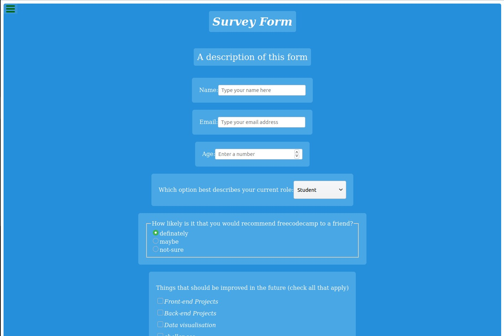

Projects
Profile
Hey I am Mark
I am a web developer
These are some of my projects

Tribute Page

Technical Documentation

Survey Form
Lets work together...
How do you take your coffee?
freecodecamp
GitHub
Drupal
Twitter